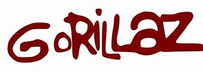

GORILLAZ:V

¿Cómo surgió el grupo?
Después de diseñar los personajes y su historia, lanzaron su primer sencillo, “Clint Eastwood”,
en 2001, que se convirtió en un éxito mundial. Poco después se lanzó su álbum debut Gorillaz (2001). Fusionó géneros como el hip-hop, el dub,
el rock alternativo y la electrónica, lo que supuso una creación muy original para la época.
Algunas canciones notables:v
Clint Eastwood: Una mezcla de rap y reggae con un ritmo pegadizo.
La letra habla de la liberación espiritual, pero también suena muy relajada.
Feelgood Inc :Probablemente su canción más famosa.
Es una crítica a la falsa felicidad que venden los medios de comunicación y las corporaciones.
La risa de fondo es muy característica.
On Melancholy Hill:Una canción melancólica y nostálgica con una melodía suave y sintética.
DARE: más bailable y funky, con la voz principal de Noodle (interpretada por Rosie Wilson).